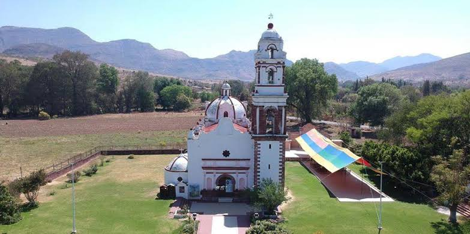

Riqueza Culinaria
Un platillo tradicional e histórico de la Mixteca Alta y Baja elaborado con carne de chivo sazonada de forma única y un caldo espeso de chiles costeños.
Guisado imprescindible en bautizos y mayordomías locales. Combina perfectamente carne de cerdo o pollo con chiles guajillos aromatizados con ajo criollo.
Ubicación y Sitios de Interés
¿Cómo llegar?
Se localiza en el distrito de Huajuapan, en la zona noroeste del estado de Oaxaca. Es de muy fácil acceso vehicular siguiendo la carretera federal mexicana.
Lugares Hermosos
- El Templo de Santiago Apóstol: Arquitectura religiosa colonial con retablos históricos.
- Ribera del Río Mixteco: Parajes naturales idóneos para caminatas ecológicas nocturnas o matutinas.
